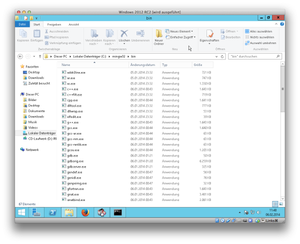
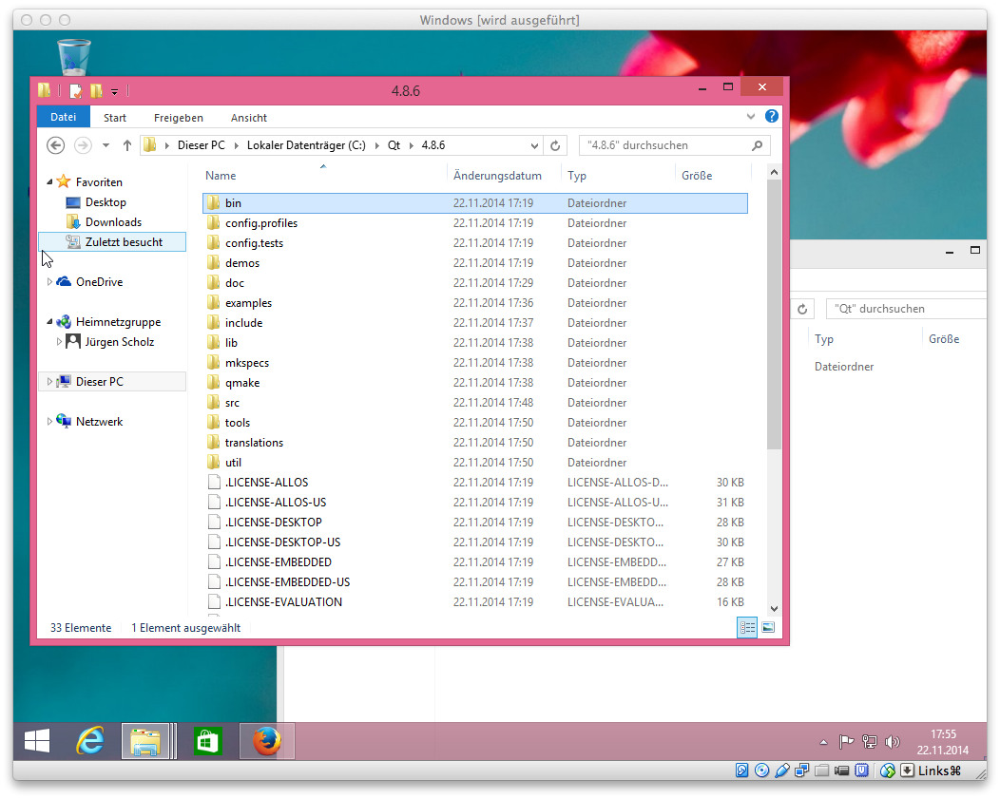

- Download and Install VirtualBox and the VirtualBox Extension
Pack.
- Download Windows
Server 2012 .iso from Microsoft which is the server version of
windows 8.
- Start VirtualBox and create a new virtual machine based on Windows
Server 2012.
- Boot into your new Windows 2012 virtual machine and
download/install the
MinGW Installation Manager to "C:\MinGW"
- After starting the MinGW Installation Manager select the packages
inside "Basic Setup" to install and install them.
- Download and install
Perl to "C:\Perl64"
- Download and install Python
to "C:\Python33"
- Install GCC from the MinGW-builds project by downloading
this file and unpack it to "C:\mingw32\" so that it looks like
the following screenshot:

- Create a directory called "deps" under "C:\".
- Create a directory called "Qt" under "C:\".
- Download and unpack Qt 4.8.6 to "C:\Qt\" so that it looks like the
following screenshot:

- Add the path to Qt-bin, mingw32-bin, Python33, Perl64-site,
Perl64-bin to your PATH-environment just like the following example
shows:
C:\Qt\4.8.6\bin;C:\mingw32\bin;C:\Python33\;C:\Perl64\site\bin;C:\Perl64\bin;C:\Perl64\bin;%SystemRoot%\system32;%SystemRoot%;%SystemRoot%\System32\Wbem;%SYSTEMROOT%\System32\WindowsPowerShell\v1.0\
- Download and do not unpack OpenSSL
1.0.1j to "C:\deps\".
- Start a MinGW-Shell by opening C:\MinGW\msys\1.0\msys.bat and
unpack the OpenSSL 1.0.1j .tar-file using the MinGW-Shell to preserve
symlinks. Then start the compilation of OpenSSL 1.0.1j.
cd /c/deps/
tar xvfz openssl-1.0.1j.tar.gz
cd openssl-1.0.1j
Configure mingw
make
- Download and do not unpack Berkeley
DB 4.8.30.NC to "C:\deps\".
- Start a MinGW-Shell by opening C:\MinGW\msys\1.0\msys.bat and
unpack the Berkeley DB 4.8.30 .tar-file using the MinGW-Shell to
preserve symlinks. Then start the compilation of Berkeley DB 4.8.30.NC.
cd /c/deps/
tar xvfz db-4.8.30.NC.tar.gz
cd db-4.8.30.NC/build_unix
../dist/configure --disable-replication --enable-mingw --enable-cxx
make
- Download and unpack
Boost 1.55 to "C:\deps\".
- Start the compilation of Boost 1.55.
cd C:\deps\boost_1_55_0\
bootstrap.bat mingw
b2 --build-type=complete --with-chrono --with-filesystem --with-program_options --with-system --with-thread toolset=gcc stage
- Download and unpack miniupnpc 1.9
to "C:\deps\". Rename the folder from "miniupnpc-1.9" to
"miniupnpc".
- Start the compilation of Miniupnpc.
cd C:\deps\miniupnpc
mingw32-make -f Makefile.mingw init upnpc-static
- Download and unpack libpng-1.6.14
to "C:\deps\".
- Start a MinGW-Shell by opening C:\MinGW\msys\1.0\msys.bat and
start the compilation of libpng-1.6.14.
cd /c/deps/
tar xvfz libpng-1.6.14.tar.gz
cd libpng-1.6.14
configure --disable-shared
make
cp .libs/libpng16.a .libs/libpng.a
- Download and unpack qrencode-3.4.4
to "C:\deps\".
- Start a MinGW-Shell by opening C:\MinGW\msys\1.0\msys.bat and
start the compilation of qrencode-3.4.4.
cd /c/deps/
tar xvfz qrencode-3.4.4.tar.gz
cd qrencode-3.4.4
configure --enable-static --disable-shared --without-tools
Edit Makefile like the following diff shows:
- LIBS=
+ LIBS="../libpng-1.6.14/.libs/libpng.a ../../mingw32/i686-w64-mingw32/lib/libz.a" \
- png_CFLAGS=
+ png_CFLAGS="-I../libpng-1.6.14" \
- png_LIBS=
+ png_LIBS="-L../libpng-1.6.14/.libs" \
Back in your MinGW-Shell do
make
- Download and unpack Machinecoin
to "C:\machinecoin\".
- Start a MinGW-Shell by opening C:\MinGW\msys\1.0\msys.bat and then
start the compilation of leveldb.
cd /C/machinecoin/src/leveldb
TARGET_OS=NATIVE_WINDOWS make libleveldb.a libmemenv.a
- Edit "C:\machinecoin\src\makefile.mingw" changing BOOST_SUFFIX,
INCLUDEPATHS and LIBPATHS and adding -static option to LDFLAGS just
like the following diff shows:
DEPSDIR?=/usr/local
- BOOST_SUFFIX?=-mgw46-mt-sd-1_52
+ BOOST_SUFFIX?=-mgw48-mt-s-1_55
INCLUDEPATHS= \
-I"$(CURDIR)" \
- -I"$(DEPSDIR)/include"
+ -I"c:/deps/boost_1_55_0" \
+ -I"c:/deps/db-4.8.30.NC/build_unix" \
+ -I"c:/deps/openssl-1.0.1j/include" \
+ -I"c:/deps" \
+ -I"c:/deps/libpng-1.6.14" \
+ -I"c:/deps/qrencode-3.4.4"
LIBPATHS= \
-L"$(CURDIR)/leveldb" \
- -L"$(DEPSDIR)/lib"
+ -L"c:/deps/boost_1_55_0/stage/lib" \
+ -L"c:/deps/db-4.8.30.NC/build_unix" \
+ -L"c:/deps/openssl-1.0.1j" \
+ -L"c:/deps/miniupnpc" \
+ -L"c:/deps/libpng-1.6.14/.libs" \
+ -L"c:/deps/qrencode-3.4.4/.libs"
# enable: ASLR, DEP and large address aware
- LDFLAGS=-Wl,--dynamicbase -Wl,--nxcompat -Wl,--large-address-aware
+ LDFLAGS=-Wl,--dynamicbase -Wl,--nxcompat -Wl,--large-address-aware -static
- Start the compilation of the Machinecoin-Daemon.
cd C:\machinecoin\src
mingw32-make -f makefile.mingw
strip machinecoind.exe
- Edit "C:\machinecoin\machinecoin-qt.pro" just like the following
diff is showing:
CONFIG += thread
+ CONFIG += static
# BDB_LIB_PATH, OPENSSL_INCLUDE_PATH and OPENSSL_LIB_PATH respectively
+
+ BOOST_LIB_SUFFIX=-mgw48-mt-s-1_55
+ BOOST_INCLUDE_PATH=C:/deps/boost_1_55_0
+ BOOST_LIB_PATH=C:/deps/boost_1_55_0/stage/lib
+ BDB_INCLUDE_PATH=C:/deps/db-4.8.30.NC/build_unix
+ BDB_LIB_PATH=C:/deps/db-4.8.30.NC/build_unix
+ OPENSSL_INCLUDE_PATH=C:/deps/openssl-1.0.1j/include
+ OPENSSL_LIB_PATH=C:/deps/openssl-1.0.1j
+ MINIUPNPC_INCLUDE_PATH=C:/deps/
+ MINIUPNPC_LIB_PATH=C:/deps/miniupnpc
+ QRENCODE_INCLUDE_PATH=C:/deps/qrencode-3.4.4
+ QRENCODE_LIB_PATH=C:/deps/qrencode-3.4.4/.libs
# on Windows: enable GCC large address aware linker flag
- win32:QMAKE_LFLAGS *= -Wl,--large-address-aware
+ win32:QMAKE_LFLAGS *= -Wl,--large-address-aware -static
} else {
# make an educated guess about what the ranlib command is called
isEmpty(QMAKE_RANLIB) {
QMAKE_RANLIB = $$replace(QMAKE_STRIP, strip, ranlib)
}
LIBS += -lshlwapi
- genleveldb.commands = cd $$PWD/src/leveldb && CC=$$QMAKE_CC CXX=$$QMAKE_CXX TARGET_OS=OS_WINDOWS_CROSSCOMPILE $(MAKE) OPT=\"$$QMAKE_CXXFLAGS $$QMAKE_CXXFLAGS_RELEASE\" libleveldb.a libmemenv.a && $$QMAKE_RANLIB $$PWD/src/leveldb/libleveldb.a && $$QMAKE_RANLIB $$PWD/src/leveldb/libmemenv.a
+ # genleveldb.commands = cd $$PWD/src/leveldb && CC=$$QMAKE_CC CXX=$$QMAKE_CXX TARGET_OS=OS_WINDOWS_CROSSCOMPILE $(MAKE) OPT="$$QMAKE_CXXFLAGS $$QMAKE_CXXFLAGS_RELEASE" libleveldb.a libmemenv.a && $$QMAKE_RANLIB $$PWD/src/leveldb/libleveldb.a && $$QMAKE_RANLIB $$PWD/src/leveldb/libmemenv.a
- Start the compilation of the Machinecoin-Qt.
cd C:\machinecoin\
qmake "USE_QRCODE=1" "USE_UPNP=1" "USE_IPV6=1" machinecoin-qt.pro
mingw32-make -f Makefile.Release
- Start "machinecoin-qt.exe" with a click on your mouse and close it
again after the very first start.
- Create a textfile with notepad with the following content
rpcuser=<rpcusername>
rpcpassword=<rpcpassword>
rpcport=40332
server=1
listen=1
daemon=1
gen=0
rpcallowip=127.0.0.1
- Save the textfile to
"C:\Users\<Username>\AppData\Roaming\Machinecoin\machinecoin.conf"
- Start "machinecoin-qt.exe" with a click on your mouse to check if everything went fine.
{kind=link}
{kind=link}
{kind=link}